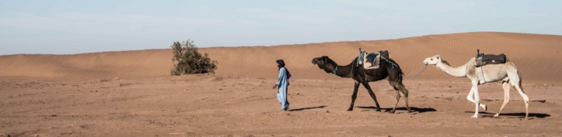

The Camel community announces the immediate availability of the new patch release Camel 2.24.2. This release contains 20 fixes and improvements applied in the past weeks by the community on the camel-2.24.x branch.
The artifacts are published and ready for you to download either from the Apache mirrors or from the Central Maven repository. For more details please take a look at the resolved issues.
Many thanks to all who made this release possible.
On behalf of the Camel PMC, Gregor Zurowski